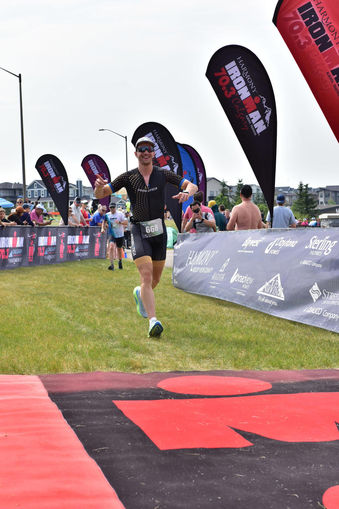

Hello, I'm Nicolas Leo Moreira
Sustainable Systems Engineering and Digital Engineering Student
About Me
I was born in Brazil, and moved to Australia when I was 5 years old, where I spent three years and sparked my desire to study abroad. I've come to believe that education really benefits when you step out of your comfort zone, learning from new cultures, friendships, and diverse perspectives.
Why Engineering? Ever since I was young, I've been captivated by the idea of building and understanding how things come together. I was that curious kid who would stand outside construction sites, wondering what everything was for. So choosing to study engineering felt like a natural decision.
Why Sustainability? I knew I wanted to make a positive impact on the world. I remember when my mom got a free one-year National Geographic magazine subscription, and I would wait every month to see the new edition. They always had a section that talked about clean energy or sustainable technologies, and I always found that to be my favorite read. I've always enjoyed being out in nature and I want to know that I'm doing something that will help preserve it for me, and for everyone else.
My parents put me in a swimming class at the age of 3, after I almost drowned in a pool and my mom (who doesn't know how to swim) had to save me. Ever since, I've spent 10 years swimming competitively. Swimming has taught me so much, and my best placements were 8th in Brazil in my age category in the 100m breaststroke and 3rd in the 4x100m medley relay. I've also swum a few open water 5km and 10km events.
I love hiking, snowboarding and being outdoors in general. However, if I'm inside I would love to be building Legos.
I'm a huge Coldplay fan, but my favorite song is Sweet Disposition, by The Temper Trap.
I love football (the true football) and I'm a huge Atletico Mineiro supporter, my hometown club.
I've always loved to read, specially the Percy Jackson novel series, by Rick Riordan, My favorite book is The Demon-Haunted World, by Ann Druyan and Carl Sagan. It changed my view on life, by highlighting how scientific thinking is crucial for navigating today's complex world. The book is extremely well written and offers insights on how we can separate fact from fiction and think critically, empowering us to make informed decisions.
I'm currently training for an Ironman 70.3 Calgary, Alberta, that will be on July 28, 2024.
Contact Me
Personal: (587) 896-7632 | nicolasleomoreira@gmail.com